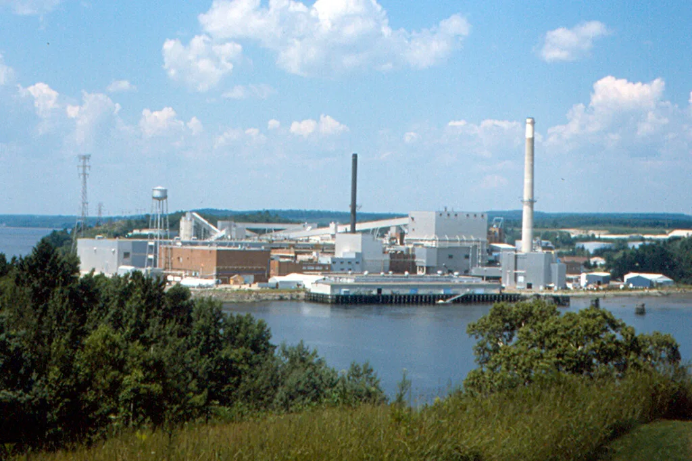
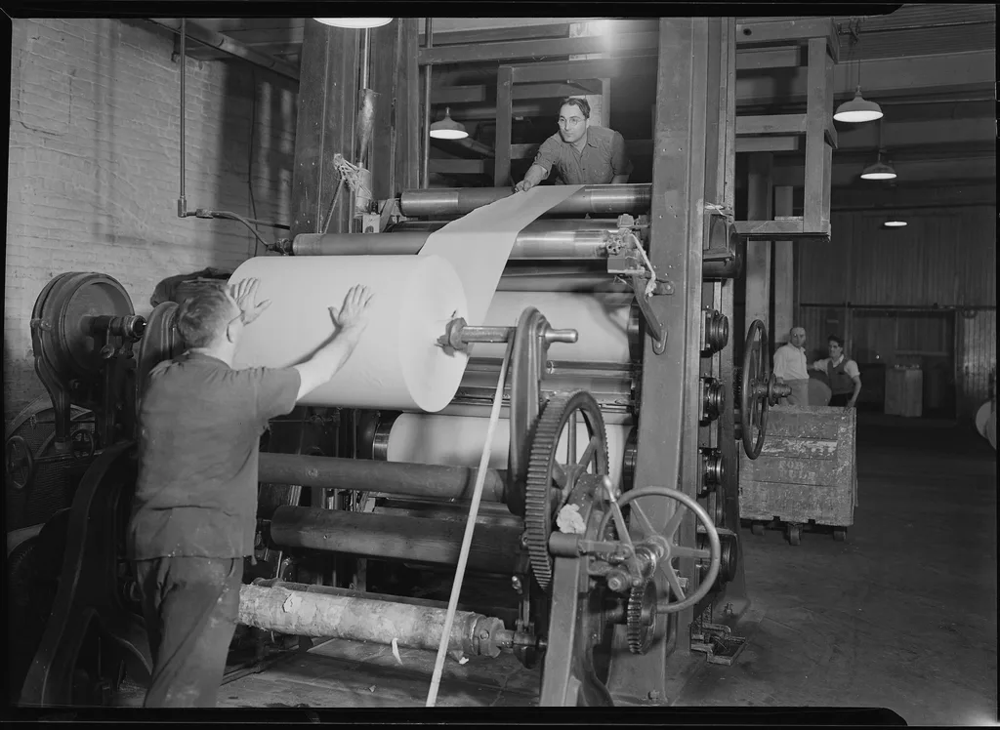

충남 서천에 있는 한솔제지 장항공장에서 협력업체 소속 노동자가 작업 중 숨지는 사고가 발생했다. 보도를 종합하면 사고는 지난 10일 오후 7시 20분께 공장 내 감열동 슬리터 공정에서 일어났다. 슬리터는 큰 종이롤을 필요한 폭으로 잘라 다시 감는 설비다. 숨진 노동자는 30대 남성으로, 한솔제지 직원이 아니라 협력사에 소속돼 일하고 있었던 것으로 전해졌다.
사고는 지게차로 종이롤을 옮기는 과정에서 벌어진 것으로 파악된다. 운반하던 종이롤이 지게차에서 이탈했고, 그 과정에서 피해 노동자가 변을 당했다는 것이 공통된 설명이다. 일부 매체는 무게가 약 2톤에 이르는 롤이 굴러가자 이를 막으려다 철문과 롤 사이에 끼였다고 전했다. 다만 세부 경위는 매체마다 조금씩 다르게 보도되고 있어, 정확한 사고 과정은 당국 조사를 통해 확인돼야 한다.

한솔제지는 사고 다음 날인 11일 중대재해 발생 사실을 공시하고 고용노동부에 보고했다. 회사는 숨진 사람이 자사 소속이 아닌 협력사 근로자라고 밝혔으며, 조사 결과가 나오면 내용을 반영해 정정 공시를 하겠다고 설명했다. 공시에는 사고의 구체적인 원인이나 현장의 안전조치가 제대로 이행됐는지에 관한 내용은 담기지 않았다. 상장사는 사업장에서 중대재해가 발생하면 그 사실을 투자자에게 알려야 하며, 이번 공시도 그 절차에 따른 것이다. 사고 소식이 전해진 뒤 생산 중단이 실적에 미칠 영향에도 시장의 관심이 쏠렸다.
생산에도 차질이 생겼다. 당국은 사고가 난 공정의 지게차 작업에 대해 부분 작업중지 명령을 내렸다. 공장 전체를 멈추라는 명령은 아니었지만, 회사는 일부 생산라인의 가동을 임시로 중단했다. 회사가 제시한 생산 재개 예상 시점은 12월 1일이다. 작업중지 명령은 사업장이 안전 개선 조치를 마련하고 당국의 확인을 받아야 풀리는 것이 일반적이어서, 실제 재개 시점은 조사와 개선 작업의 진행 속도에 따라 달라질 수 있다.

경찰과 고용노동부는 사고 원인과 함께 법 위반 여부를 들여다보고 있다. 쟁점은 원청과 하청 사이에 안전보건 관리체계가 제대로 갖춰져 있었는지, 그리고 중대재해처벌법과 산업안전보건법을 어긴 부분이 있는지다. 2022년 1월 시행된 중대재해처벌법은 노동자가 사망하는 사고가 났을 때 사업주나 경영책임자가 안전보건 확보 의무를 다했는지를 따지며, 하청 노동자가 피해를 입은 경우에도 원청의 책임을 물을 수 있도록 하고 있다.
같은 공장에서 사망사고가 일어난 것이 처음이 아니라는 점도 논란이다. 장항공장에서는 2019년 4월에도 노동자가 설비에 끼여 숨지는 사고가 있었다. 비슷한 유형의 사고가 다시 발생한 만큼, 그동안 재발 방지 대책이 현장에서 실제로 작동했는지에 대한 점검이 불가피해 보인다. 노동계에서는 위험한 작업을 외주에 맡기는 구조 자체를 문제로 지적하는 목소리도 나온다.
무거운 물건을 옮기는 작업에서 일어나는 끼임과 깔림은 제조업 현장에서 되풀이되는 대표적인 사고 유형이다. 운반 경로에 사람이 들어가지 못하도록 막고, 작업을 지휘하는 사람을 따로 두는 등의 기본 수칙이 지켜졌는지가 조사에서 확인될 것으로 보인다. 최종 사고 원인과 책임 소재는 경찰과 고용노동부의 조사 결과가 나와야 가려질 전망이다.